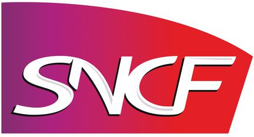

Après avoir bénéficié d'expériences professionnelles variées, j'ai décidé de monter en compétence et de me former dans le domaine du développement web/logiciel. J'ai ainsi eu l'opportunité de reprendre une formation et suis actuellement étudiant en DUT informatique. Ce port-folio a pour objectif de vous présenter mes expériences, mes centres d'intérêts, ainsi que certains de mes projets.
Bonne visite !
IUT Paris 13 - Villetaneuse
Formule condensée sur un an
Création d’un site en HTML/CSS
Création d’un jeu 2048 en C
Création d’un jeu de la bataille en JAVA
IFSI Roger Prévot - Moisselles
3 semestres validés
Diplôme d’aide soignant obtenu
École Supérieure d’Ingénieurs en Électronique et Électrotechnique - Amiens
Création d’un jeu vidéo SNAKE en C++
LV2 – Japonais
Lycée Robert de Luzarches - Amiens
Option SVT
LV2 – Allemand

Gare de l'Est - Paris
Accueil, information et orientation client en gare
Maintenance de premier niveau des machines de vente
Gestion de site
IFSI Roger Prévot - Moisselles
4 stages de 10 semaines effectués en milieu hospitalier
S1 - Psychiatrie
S2 - Soins de suite en cardiologie et pneumologie
S3 - Urgences
S4 - Soins de suite en traumatologie
Gare de l'Est - Paris
Accueil, information et orientation client en gare
HTML
JavaScript
C/C++
CSS
PHP
Java
Anglais
Sens de la communication / Gestion des conflits
Capacité d'adaptation / Travail en équipe
Autonome / autodidacte
Jeux vidéo
Musique
Sport